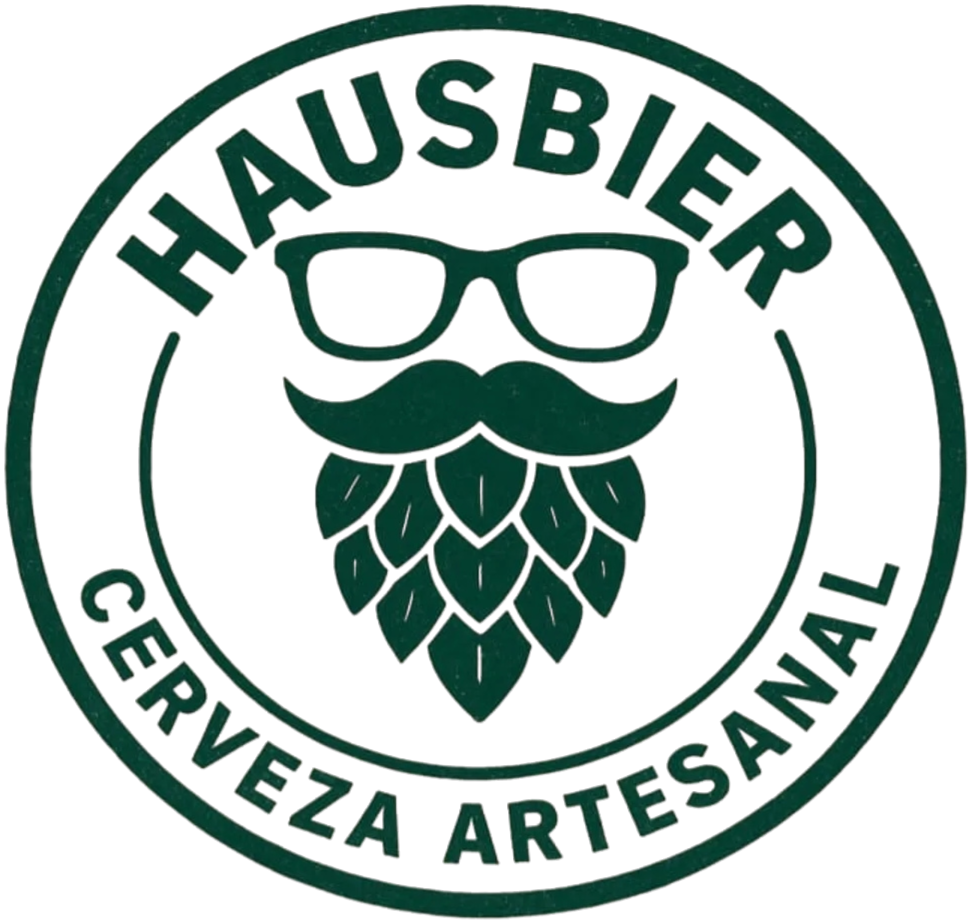
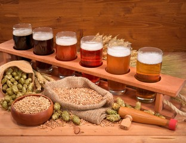

Cerveza artesanal con carácter, hecha para quienes disfrutan de los buenos momentos

La elaboración de cerveza artesanal comienza con la selección de los ingredientes principales: agua, malta de cebada, lúpulo y levadura.